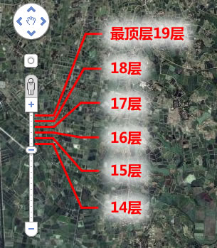
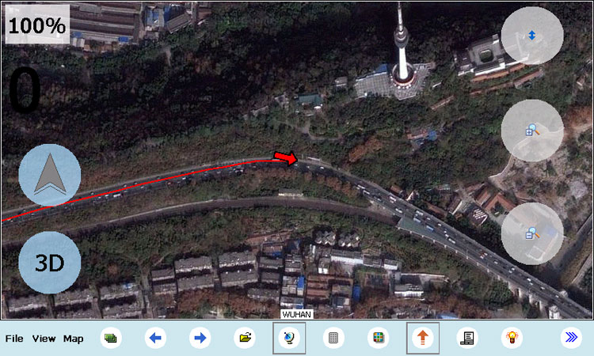
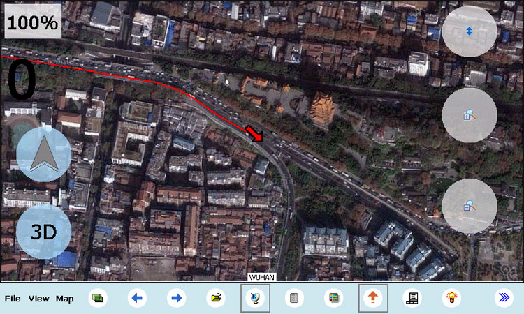

|
| 首页 | GeoTIFF | 今日花园Maps | OruxMaps | OZI | 资源 | 软件 | 联系 |
| 当前位置：OZI |
|
★ OziExplorer地图制作 ★ 在WINCE系统的导航仪上安装OziExplorer软件 ★ 在WINDOWS笔记本电脑上用OziExplorer软件导航 ★ OziExplorer航点文件的制作 ★ OziExplorer路径文件的制作 ★ 在安卓手机上安装和使用OziExplorer软件 ★ OZI for Android1.15版中添加航点的方法 ★ OZI for Android1.15版中添加线路的方法 本站提供的OziExplorer卫星地图(离线)，卫星图片取自谷歌国外服务器，图片都是无坐标偏移的，所以地图的GPS坐标定位十分精确。 谷歌卫星地图的分辨率是由层数决定的，层数越大则分辨率越高，本店制作的卫星地图最高分辨率可以做到18层（一般是城区部分），省份分辨率一般为15层。 谷歌卫星地图层数的查看方法是，打开谷歌地图网站(http://ditu.google.cn/)，通过左边的缩放滑块来确定地图的层数，在中国大陆地区滑块拖到最上是19层。如下图所示： |

|
本站提供的OziExplorer卫星地图(离线)，每幅都包括后缀为.map和.ozf2的两个文件。
由于单幅地图有大小限制，所以某个区域的地图可能由多幅地图拼接而成。如下图所示：
|
|
OziExplorer导航软件可以添加多幅地图，并根据GPS坐标值自动调用地图。 OziExplorer卫星地图(离线)的使用： 1）Windows系统的PC电脑，安装 OziExplorer 电脑版 2）WINCE系统的车载导航仪，安装 OziExplorer WINCE版 3）安卓系统的手机、平板电脑，安装 OziExplorer 安卓版 电脑版OziExplorer下载地址：ozi for pc 3.95.4m.rar WINCE导航仪版oziExplorer下载地址：oziExplorerCE2.35B.rar 安卓版oziExplorer下载地址：Ozi_for_Android1.15.apk 本站免费提供全国9层OziExplorer卫星地图(190M)给大家试用，下载地址：china9.rar 下图是华创E路航LH980N车载GPS导航仪使用OziExplorer卫星地图的效果图（图中使用的是18层分辨率的地图）。 |



|
下图是中兴V880智能手机使用OziExplorer卫星地图的效果图（图中使用的是18层分辨率的地图）。 |


|
需要制作OZI地图的用户请到本站的淘宝店购买。 |
| www.todaygarden.net |
版权所有 2010-2020 今日花园 |